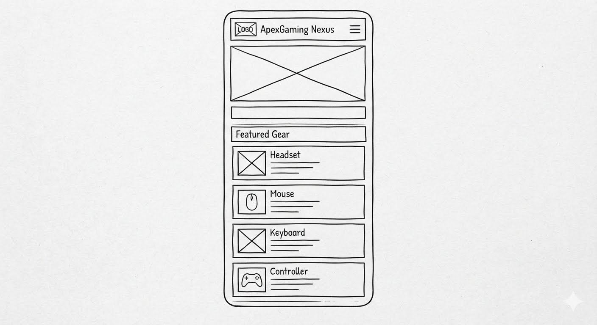
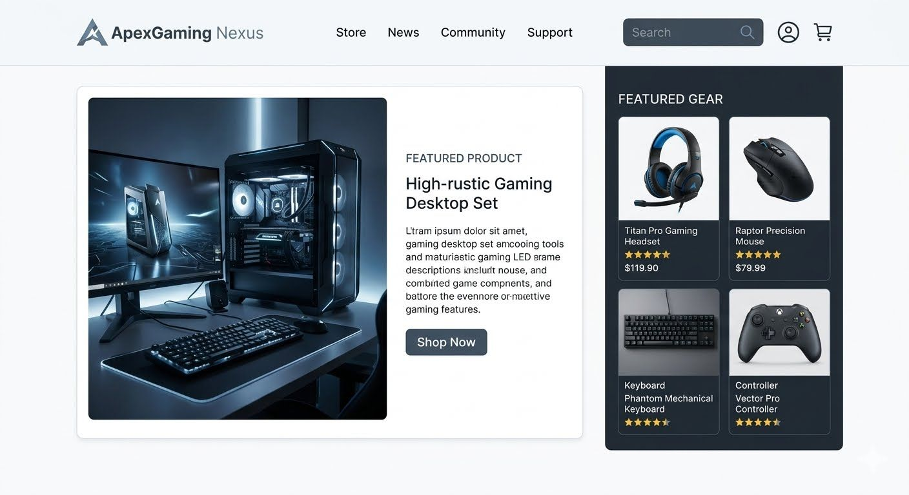

1. Site Name
Site Name: ApexGaming Nexus
Reason for Selection: The name represents a ultimate destination hub ("Nexus") where players can elevate their gameplay performance and gaming setup to their peak potential ("Apex"). It targets modern gaming culture, premium peripherals, and immersive community experiences, avoiding overly generic retail titles to build a distinct brand identity.
Optional Domain Availability: apexgaming-nexus.org
2. Site Purpose
Site Purpose Statement: ApexGaming Nexus is an intuitive, responsive catalog and review platform showcasing high-performance gaming gear and community-focused player experiences. The primary purpose of the site content is to provide comprehensive, curated information regarding essential gaming items—specifically ergonomic peripherals, high-fidelity audio headsets, and performance-driven accessories. The site guides users to dependable hardware choices optimized for general immersion, competitive training, and the specific demands of four target gaming genres: First-Person Shooters (FPS), Fighting Games, Racing Simulators, and Sports/E-sports titles.
3. Target Audience Scenarios
Our website layout and content elements are engineered to resolve specific, practical questions asked by real target audience users:
- Scenario Question 1 (Hardware/Experience Focus): "I play intensive, competitive FPS matches and racing simulators weekly. What gaming mouse or controller options do you showcase that feature ultra-low latency response times and high-durability switches to prevent click-failure on intensive gaming sessions?"
- Scenario Question 2 (Community/Form Focus): "Where can I find a secure community inquiry page to submit a request for hardware sizing charts or tailored gear configuration recommendations for our local e-sports gaming team?"
4. Color Scheme
At least two distinct theme colors are defined below to build solid visual repetition and design consistency:
- Primary Color (
#0b3c5d- Classic Deep Blue): Used for structural layout elements, section title lines, bold headings, container borders, and text emphasis points to anchor user attention. - Secondary Accent Color (
#328cc1- Active Blue): Applied to interactive navigation anchors, bullet point fragments, inline link hovers, and highlighting target sub-categories. - Athletic Gold Accent (
#d9b310): Used carefully on call-to-action buttons, high-durability badges, or stock notices to prompt actions. - Background Space (
#ffffff&#f9f9f9): Preserved for structural canvases to keep reading lines clear and manage spatial white-space parameters cleanly. - Core Body Text (
#1d2731- Charcoal Dark): A highly legible dark hue utilized exclusively on paragraph text blocks to verify top-tier accessibility contrast ratings.
5. Typography
Two safe, reliable fonts have been chosen to optimize reading speeds and eliminate unexpected structural shifts during page load:
- Heading Font Selection:
'Trebuchet MS', sans-serif— Applied exclusively to all major header layers (<h1>,<h2>, and<h3>elements) to create clean visual presence and professional structure. - Body Font Selection:
Arial, sans-serif— Applied to standard description paragraphs, list elements, form input text blocks, and table cells to yield optimal legibility across mobile and wide viewports.
6. Home Page Wireframes
These placeholders display the black-and-white structural layout blueprints of the Home Page. They focus on responsive layout frameworks, content blocks, and functional utility before writing layout code:
Small Viewport Layout (320px Mobile)
Skeletal vertical blueprint for mobile viewports. Features a compact brand bar header containing an interactive, click-activated hamburger nav menu placeholder, leading directly into a stacked layout of essential gaming hardware cards.

Wider Viewport Layout (Desktop/Tablet)
Skeletal horizontal blueprint for desktop and widescreen viewports. Features an expanded horizontal main text links strip navigation rows menu, shifting the FPS, Fighting, Racing, and Sports game catalogs into a multi-column layout grid.
